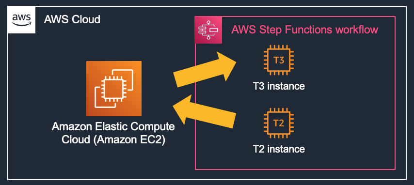
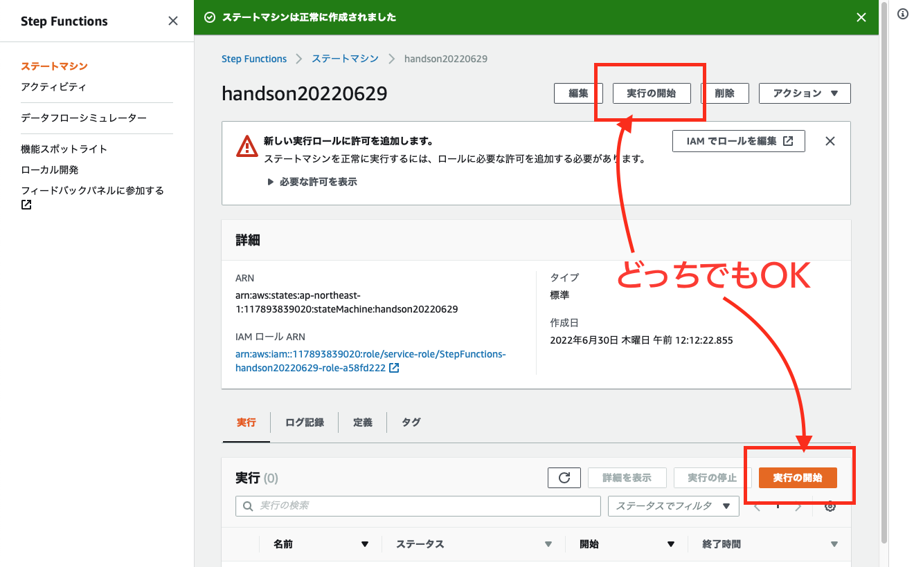
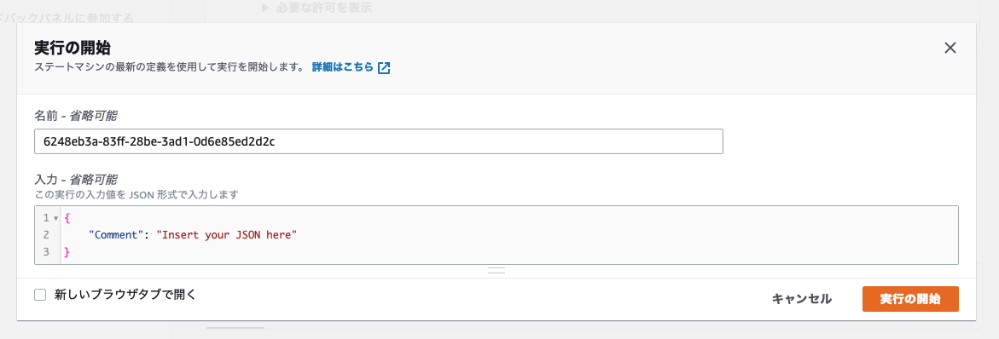
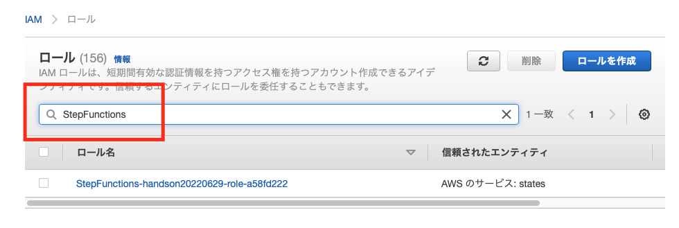

みなさんは、AWS Step Functions (以下、Step Functions) を利用したことがありますか？
Step Functions はステートマシンという AWS のマネージドサービスで、AWS Lambda や Amazon Simple Nortification Service などのマイクロサービス・コンポーネントを疎結合して実行できるサービスです。
Amazon States Language
Step Fuctions は、JSON ベースの Amazon States Language (以下、ASL) にて記載していきます。この ASL を利用して各ステートをコーディングしながら組み上げていくのは、初心者には敷居が高く習熟する時間も必要です。

AWS Step Functions Workflow Studio
AWS Step Functions Workflow Studio (以下、Workflow Studio) は、2021 年 6 月にリリースされた GUI ベースのグラフィカルなコーディングツールです。 ブロックを繋いでいくことで、ワークフローを作成することができ、アクションやフローが比較的短時間でワークフローの作成方法をご理解いただければと思います。

AWS News Blog:
New – AWS Step Functions Workflow Studio – A Low-Code Visual Tool for Building State Machines
本ハンズオンでは「ある特定の時間帯だけ EC2 インスタンスのインスタンスファミリーを変更する。」という簡単なツールの作成を通じて Step Functions と Workflow Studio の使い方を学べます。
準備
セクション 3 〜 4 にて、手動でインスタンスファミリーを変更する手順を学びます。
基本編
セクション 5 〜 10 にて、インスタンスファミリーを変更する Step Functions を設定し、Workflow Studio の使い方や、ブロック間の値の渡し方などを学びます。
応用編
セクション 11 以降では、EventBridge と連携して、指定時間にインスタンスファミリーを変更する方法を学びます。
また、各ステート間で受け渡す値を変数にして、変更するインスタンスを動的に処理する方法もご理解いただけます。
本ハンズオンを最後まで進めると JSON コーディングにステップを進めていただくための、基本的な使い方や概念が理解できるかと思います。

インスタンスファミリーを変更するフロー
Amazon EC2 インスタンスは、汎用 m 系ファミリー や、メモリー最適 r 系ファミリー など、用途に応じた様々なインスタンスタイプが用意されています。
稼働しているインスタンスのインスタンスクラスやインスタンスサイズを変更するには、インスタンスを一旦停止する必要があります。
大まかな流れは以下のようになります。

まず、この手順を手動操作してみます。
以下、URL をクリックして EC2 コンソールを開きます。
https://ap-northeast-1.console.aws.amazon.com/ec2/v2/home?region=ap-northeast-1#Home:
画面遷移したら、オレンジ色の [ インスタンスを起動 ▼ ] ボタンをクリックして、ドロップダウンメニューから [ インスタンスを起動 ] を選択してください。

インスタンスを起動
[ インスタンスを起動 ] の画面に遷移するので、Name タグを指定してください。
本ハンズオンでは handson20220629 としました。
オレンジ色の [ インスタンスを起動 ] ボタンをクリックすると、

以下のエラーが表示されるので、

キーペアなし を指定してください。

インスタンスのステータスが [ 実行中 ] になったら、

インスタンスタイプの変更を試してみます。
インスタンスのチェックボックスにチェックを入れて、[ アクション ] から [ インスタンスの設定 ] と進めてください。
すると、[ インスタンスタイプを変更 ] がグレーアウトしています。

そこで、インスタンスを停止してみましょう。
[ インスタンスの状態 ] から [ インスタンスを停止 ] を選択してください。

インスタンスの状態が [ 停止中 ] から

[ 停止済み ] に変わります。

再度、[ アクション ] から [ インスタンスの設定 ] と進めると、[ インスタンスタイプを変更 ] が活性化されて押せるようになっています。
[ インスタンスタイプを変更 ] をクリックして、

t2.micro から t3.nano に変更してください。

この状態でインスタンスを起動すると t3.micro で上がってくるのですが、一旦停止のまま起動せずに置いておいてください。
前ページにて、EC2 の変更手順を確認しました。続いて、この変更手順を Step Functions にて実装します。
まず最初に、EC2 コンソールのブラウザタブとは別のタブで以下 URL を開き、Step Functions コンソールにアクセスしてください。
初めて利用される場合は、以下のようなウェルカムページが表示されるかと思います。
https://ap-northeast-1.console.aws.amazon.com/states/home?region=ap-northeast-1#/homepage
[ 今すぐ始める ] ボタンをクリックしてください。

作成方法の選択
[ 作成方法の選択 ] 画面に遷移しますので、[ ワークフローを視覚的に設計 ○ ] と [ 標準 ] のまま、変更せずに [ 次へ ] ボタンをクリックしてください。

[ 作成方法を選択 ] が表示されず、以下のように [ Hello World サンプルを確認 ] が表示された場合は一旦 [ キャンセル ] をクリックし、
左側のドロアーメニューを展開し、[ ステートマシン ] をクリックして、[ ステートマシンの作成 ] をクリックすると [ 作成方法の選択 ] が表示されるかと思います。

[ ステップ 2: ワークフローを設計 ] が表示されるので、インスタンスを起動するアクションを追加してみます。
[ Workflow Sturio へようこそ！ ] のメッセージが表示された方は [ × ] アイコンをクリックして閉じてください。

左側のペインにある検索ボックスに startinstances と入力し、候補に表示された [ Amazon EC2 StartInstances ] をフローまでドラッグします。

右側の [ API パラメータ ] に EC2 インスタンスのインスタンス ID を入力してください。

ここまでできたら、[ 次へ ] ボタンをクリックしてください。

[ 生成されたコードを確認 - 省略可能 ] 画面も [ 次へ ] をクリックしてください。
(スクリーンショットなし)
[ ステートマシン設定を指定 ] 画面に遷移するので、名前を設定します。ここでは handson20220629 としました。
また、アクセス許可は [ 新しいロールの作成 ] が選択されていることを確認してください。

ログ記録、X-Ray トレースはエラー発生時の切り分けに便利ですが、本ハンズオンでは作成しません。
タグも不要です。

オレンジの色の [ ステートマシンの作成 ] ボタンをクリックしてください。

ステートマシンが作成されたら、[実行の開始] ボタンをクリックしてください。
変な名前のボタンですが、上下どちらのボタンをクリックしても実行されます。

確認メッセージが表示されたら、再度オレンジの [ 実行の開始 ]ボタンをクリックします。

すると、エラーになります。エラーになった [ States.TaskFailed ステップ: StartInstances ] の [ 原因 ▶︎ ] をクリックすると、権限エラーが発生していたことがわかります。
権限エラーを解消するため、IAM コンソールにてポリシーをアタッチします。
以下リンクから、3 つめのウインドウで IAM コンソールのロールページを開きます。
https://us-east-1.console.aws.amazon.com/iamv2/home?region=us-east-1#/roles
IAM ロールのページで、検索ボックスに StepFunctions まで入力すると、先ほどステートマシンを作成したときに自動生成されたロールが表示されます。


ロールの名前をクリックして画面遷移したら、[ 許可を追加 ] から [ ポリシーをアタッチ ] ボタンをクリックして下さい。

AmazonEC2FullAccess のチェックボックスにチェックを入れて、[ ポリシーをアタッチ ] ボタンをクリックしてください。

追加で、AmazonSSMManagedInstanceCore もアタッチしておいてください。
以下のようなポリシーになれば OK です。
IAM コンソールのウインドウを閉じて、次のステップに進んでください。

<ターゲットのインスタンスのみで絞れるもの>
- EC2 StartInstances
- EC2 StopInstances
<該当のパラメータだけで絞れるもの>
- SSM GetParameters
<すべて>
- EC2 DescribeInstances
IAM ロールの設定ができたので、再度ステートを実行してみましょう。
[ 新しい実行 ] ボタンをクリックします。
成功すると [ StartInstances ] のブロックが緑色になります。ブロックをクリックすると右側の [ 入力と出力 ] のタブに入力と出力の JSON コードがそれぞれ確認できます。

EC2 コンソールのタブに移動すると、インスタンスが起動しているのが確認できるかと思います。
[ 停止済み ] のステータスから変わらない方は、下図の [更新] ボタンをクリックして確認してください。

StepFunction の大まかな操作手順はご理解いただけたかと思います。
ここからは、更にアクションブロックを追加していきます。
インスタンスファミリーを変更するフローは以下の通りでした。
インスタンスを停止する
上から順番にアクションを入れていきましょう。
[ ステートマシンの編集 ] ボタンをクリックし、

[ Workflow Studio ] をクリックします。

アクションから、[ Amazon EC2 StopInstances ] をドラッグして、[ StartInstances ] の上に挿入します。
[ API パラメータ ] にインスタンス ID を入力します。

これで、インスタンスを止めれるようになりました。
インスタンスファミリーを変更する
インスタンスファミリーを変更するには、ModifyInstanceAttribute を利用します。
アクションから、[ Amazon EC2 ModifyInstanceAttribute ] をドラッグして、[ StopInstances ] と [ StartInstances ] の間に挿入します。
[ API パラメータ ] には、
{
"InstanceId": "＜インスタンス ID＞",
"Attribute": "instanceType",
"Value": "m6i.large"
}
と入力してください。
以下のようなイメージです。

これで、インスタンスファミリーを「m6i.large」に変更できるようになりました。
インスタンスが停止しているか確認する
インスタンスの停止状態は DescribeInstances を利用します。
アクションから、[ Amazon EC2 DescribeInstances ] をドラッグして、[ StopInstances ] と [ ModifyInstanceAttribute ] の間に挿入します。

[ API パラメータ ] には、StopInstances のブロックに登録したものと同じ以下を入力してください。
{
"InstanceIds": [
"＜インスタンス ID＞"
]
}
一通りのアクションは追加できましたが、手動でインスタンスファミリーを変更した際のアクションをもっと細分化すると、
- インスタンスが停止しているか確認する
- インスタンスが停止するのを待つ
というアクションを人間がよしなに行っています。これを機械にやってもらうための設定をします。

Choice
インスタンスが停止したかどうか「状態」は、DescribeInstances で取得できているため、「状態」をみて、次のステップに進むのか待つのか判断をする必要があります。
Choice を使って分岐を入れます。
ここまで [ アクション ] を追加してきましたが、すぐ横に [ フロー ] があるのでクリックしてください。
フローを使うと、分岐や待機といった人間が自然と行っている「考えて行動する」処理を行えます。
Choice をドラッグして、[ DescribeInstances ] と [ ModifyInstanceAttribute ] の間に挿入してください。
Choice のブロックをクリックします。
すると右側に Choice の詳細ペインが表示されます。判定ルールを追加します。
判定基準は「インスタンスが停止したかどうか？」ですので、[ Rule #1 ] をクリックして、

[ Add conditions ] ボタンをクリックします。

[ Conditions for rule #1 ] ダイヤログが開くので、以下の内容を入力して [ 条件を保存する ] ボタンをクリックしてください。
Not | Variable | Operator | Value |
空欄 | $.Reservations[0].Instances[0].State.Name | matches string | stopped |
以下のようなイメージです。

インスタンスが停止している場合は、ModifyInstanceAttribute のステートでインスタンスファミリーを変更するので、[ Then next state is: ] のドロップダウンメニューから [ ModifyInstanceAttribute ] を選択してください。
インスタンスが停止していない場合のアクション
インスタンスが停止していない場合は、停止するまで待つ必要があります。
ステートの処理を待機させるには wait を使います。
[ フロー ] タブから、[ wait ] ブロックをドラッグして、[ Default ] 側にドロップしてください。

右側の詳細ペインで、秒を 30 seconds に、次の状態を DescribeInstances にします。
これで完成です！
以下の画像と見比べて異なる部分があれば修正してください。

問題なければ、[ 適用して終了 ] ボタンをクリックしてください。

Step Functions の画面に戻るので、[ 保存 ] ボタンをクリックして、ステートマシンの設定を保存してください。

確認メッセージが表示されますので、[ 保存を続行します ] ボタンをクリックして、保存します。

準備が整いましたので、テスト実行してみてください。

ステートが進んでいくのがお分かりいただけるかと思います。
水色が実行されているステートで、緑が成功したステートになります。

EC2 コンソールから、インスタンスが m6i.large で起動したことを確認してください。

うまくインスタンスファミリーは変更できたでしょうか。
概要のみ記載しておきますので、余力のある方にトライいただければと思います。
- EventBridge を設定して、指定した時刻にインスタンスファミリーを変更する
- Choice を利用して t3.nano なら t2.micro に、t2.micro なら t3.nano に変更する
- API パラメータを変数化して EventBridge のパラメータでインスタンスタイプを変更する
それでは、作成したステートマシンを指定した時刻に起動させてみましょう。
現在、m6i.large で起動している方は、(停止していても大丈夫です。) ステートマシンの [ ModifyInstanceAttribute ] を編集して「t3.micro」にしてください。

パンくずリストから、作成したステート名をクリックして、[ アクション ▼ ] から [ EventBridge (CloudWatch イベント) ルールを作成 ] ボタンをクリックします。
EventBridge が別ウインドウで開きますので、[ 名前 ] を設定してルールタイプを [ スケジュール ] に変更し、[ 次へ ] ボタンをクリックします。

スケジュールパターンはひとまず [ ○ 通常レートで実行されるスケジュール(10分ごとなど)。 ] を選択して、[ レート式 ] は 5 分にしてみましょう。
[ 次へ ] ボタンをクリックしてください。
[ ターゲットを選択する ] 画面に遷移するので、以下を設定してください。
ターゲットタイプ | ○ AWS のサービス |
ターゲットの選択 | Step Functions ステートマシン |
ステートマシン | handson20220629 |
実行ロール | この特定のリソースについて新しいロールを作成 |
設定できたら、[ 次へ ] をクリックして進めてください。
[ タグを設定 - オプション ] はそのまま [ 次へ ] をクリックして進めてください。
(スクリーンショットなし)
[ レビューと作成 ] で内容を確認したら、[ ルールの作成 ] をクリックしてください。
モニタリング
作成したルールをクリックして、モニタリングタブから実行状態が確認できます。
更新ボタンをクリックして状態を最新にしながら、Invocation (呼び出し) にメトリクスが記録されるのを確認してください。
確認できたら、実行できているので [無効化] ボタンをクリックし、5 分に 1 回 実行されるのを止めましょう。

EC2 コンソールに移動し、更新ボタンをクリックすると

インスタンスタイプが変わって起動したのが確認できます。

ここまでの手順で、指定した時間にインスタンスタイプが変更できるようになりました。
次は、ステートマシンを直接修正する必要がないように、現在のインスタンスサイズを確認して、t3.micro なら t2.micro に、t2.micro なら t3.micro に、トグル的に変更できるようにしたいと思います。
t2.micro は EBS 最適化に対応していない
t2.micro は旧世代のインスタンスで、EBS 最適化に対応していません。
手動でインスタンスタイプを変更しようとすると、EBS に最適化のチェックボックスがグレーアウトしていますが、最適化に対応していないと表示されます。

先の手順で少し触れましたが、Step Functions だと、この、「EBS 最適化」の状態のまま t2.micro で起動しようとするため、StartInstances のブロックで起動に失敗することがあります。
具体的には「EBS 最適化」が有効になって稼働しているインスタンスを Step Functions で、API パラメータで t2.micro を指定して実行すると、StartInstances のブロックでエラーになります。

ワークフロー 例
組み方はいろいろ考えられますが、サンプルをご用意しました。
全体像は以下の通りです。
ブロックごとに解説していきます。
Choice (1)
このブロックでは、現在のインスタンスが t2.micro かそうでないかを判定しています。
Rule #1 には以下を設定しました。
Not | Variable | Operator | Value |
空欄 | $.Reservations[0].Instances[0].InstanceType | match string | t2.micro |
ModifyInstanceAttribute
こちらは現在のインスタンスタイプが t2.micro の場合の分岐です。
1 つ目の ModifyInstanceAttribute ではインスタンスタイプを t3.nano に設定します。
API パラメータに以下を設定しました。
{
"InstanceId": "＜インスタンス ID＞",
"Attribute": "instanceType",
"Value": "t3.nano"
}
ModifyInstanceAttribute (2)
2 つ目の ModifyInstanceAttribute では EBS 最適化を有効化します。
API パラメータに以下を設定しました。
{
"InstanceId": "＜インスタンス ID＞",
"Attribute": "ebsOptimized",
"Value": "true"
}
ModifyInstanceAttribute (3)
こちらは現在のインスタンスタイプが t3.nano の場合の分岐です。
1 つ目の ModifyInstanceAttribute ではインスタンスタイプを t2.micro に設定します。
API パラメータに以下を設定しました。
{
"InstanceId": "＜インスタンス ID＞",
"Attribute": "instanceType",
"Value": "t2.micro"
}
ModifyInstanceAttribute (2)
2 つ目の ModifyInstanceAttribute では EBS 最適化を無効化します。
API パラメータに以下を設定しました。
{
"InstanceId": "＜インスタンス ID＞",
"Attribute": "ebsOptimized",
"Value": "false"
}
正しく設定ができると、ステートマシンを実行した際に以下のような動きになります。

これが本ハンズオンの最後のステップになります。
本ステップでは、API パラメータに入力してきた値を一部変数にして、EventBridge からパラメータを渡せるようにします。
具体的に記載しますと、
{
"InstanceIds": [
"i-06c131da90909c1cb"
]
}
と、ハードコーディングしてきたインスタンス ID を
{
"InstanceIds.$": "States.Array($.INSTANCE_ID)"
}
といった形で変数にしましょう。という話です。
変数化を行うことで、仮にインスタンス ID が変わったときでも、それぞれのブロックに設定してきた API パラメータを全て書き換えることなく、トリガー元の EventBridge で一元管理して対応できます。
ASL の必然性
上記コードに、States.Array() という関数的なものが初登場しました。
本ハンズオンでは、Workflow Studio を使った GUI の操作をメインに説明してきましたが、パラメータ入力は、States.Array() をはじめとした 「Intrinsic 関数」を使う必要があります。
そんなに数は多くないので、分からなくなったら以下ドキュメントを参照してください。
また、InstanceIds の後ろに .$ があり、INSTANCE_ID の手前には $. があります。
これも「Intrinsic 関数」です。$ に関しては、API パラメータの下部にもコメントが記載されています。

ワークフロー 例
一つ前のステップにてご紹介したワークフローを使って、変数の書き換え方法をブロックごとに解説します。
StopInstances
StopInstances のブロックで修正するのは 2 点です。
まず、API パラメータを以下のとおり変数化します。
{
"InstanceIds.$": "States.Array($.INSTANCE_ID)"
}
次に、出力タブに移動して、ResultPath を使用して元の入力を出力に追加 - 省略可能 のチェックボックスにチェックを入れて、Combine original input with result を $.Output にしてください。
こんな感じです。
この ResultPath を使用して元の入力を出力に追加 を行うと、通常の出力に加えて、入力のデータも次のステートに渡せるようになります。つまりどういうことかと言うと、以下のように SopInstances が 入力で受けた INSTANCE_ID を出力の上部に追加しているのが分かりますでしょうか。
こんな感じで、次のステートに情報をアドオンして渡せるのです。

DescribeInstances
DescribeInstances のブロックで行うことも 2 点で、StopInstances と同様です。
まず、API パラメータは以下に修正してください。
{
"InstanceIds.$": "States.Array($.INSTANCE_ID)"
}
出力タブに移動して、ResultPath を使用して元の入力を出力に追加 - 省略可能 のチェックボックスにチェックを入れて、Combine original input with result を $.Output にしてください。
Choice
1 つ目の Choice で変更するのは 1 点のみです。
Rule #1 の Variable を
$.Reservations[0].Instances[0].State.Name
から、
$.Output.Reservations[0].Instances[0].State.Name
に変更してください。
Choice (2)
2 つ目の Choice も同様に Rule #1 の Variable を
$.Reservations[0].Instances[0].InstanceType
から
$.Output.Reservations[0].Instances[0].InstanceType
に変更してください。
ModifyInstanceAttribute
ModifyInstanceAttribute は 4 つとも、API パラメータに記載したインスタンス ID の行を以下に修正してください。
"InstanceId.$": "$.INSTANCE_ID",
出力タブに移動して、ResultPath を使用して元の入力を出力に追加 - 省略可能 のチェックボックスにチェックを入れて、Combine original input with result を $.Output にしてください。
StopInstances
StopInstances も API パラメータを以下に修正してください。
{
"InstanceIds.$": "States.Array($.INSTANCE_ID)"
}
テスト
これまではテストの際に渡す JSON データを変更せずに実行していましたが、今回は INSTANCE_ID の値を渡す必要があります。 [ 新しい実行 ] ボタンをクリックして、[ JSON フォーマット ] に以下を入力してください。
{
"INSTANCE_ID": "＜インスタンス ID＞"
}
EventBrige
うまく実行できたら、最後にイベントブリッジの設定を変更します。 EventBridge のウインドウを閉じた方は、以下をクリックして開いてください。
https://ap-northeast-1.console.aws.amazon.com/events/home?region=ap-northeast-1#/rules
先の手順で無効化したイベントを開き、下部にある [ ターゲット ] タブの [ 編集 ] ボタンをクリックします。
下部にある [ ▶︎ 追加設定 ] を展開し、[ 定数 (JSON テキスト) ] にしたら、以下 JSON を入力してください。
{
"INSTANCE_ID": "＜インスタンス ID＞"
}
こんな感じです。ルールを更新して、有効化し、イベントが実行されてインスタンスファミリーが変更されるのを確認してください。

セキュリティグループ
EC2 インスタンスを削除する前に、セキュリティグループの名前を控えてください。
EC2 コンソール を開き、該当の EC2 インスタンスにチェックを入れて、[ セキュリティ ] タブからセキュリティグループの名前を控えます。
EC2 インスタンス
EC2 にチェックを入れて、[ インスタンスの状態 ] から、[ インスタンスを終了 ] ボタンをクリックしてください。 EC2 が終了したら、先ほど控えたセキュリティグループを削除してください。
EC2 のセキュリティグループ を開き、削除してください。
ステートマシン
Step Functions のステートマシン一覧 を開き、該当のステートマシンを選択して [削除] ボタンをクリックして削除してください。
削除前に、アタッチされた IAM ロールの名前を控えておいてください。
EventBridge のルール
EventBridge のルール一覧 を開き、該当のルールを開いてください。
EventBridge ルールを削除する前に、[ ターゲット ] タブから作成した IAM ロールの名前を控えておいてください。
ルールは [ 削除 ] ボタンから削除してください。
IAM ロール
IAM ロールのページ にアクセスし、 「StepFunctions-handson20220629-role-xxxxxxxx」と「Amazon_EventBridge_Invoke_Step_Functions_xxxxxxxxxxxxxxxx」を削除して下さい。複数ある場合は、先の削除手順で控えたメモを参照しながら、対象のロールを削除してください。